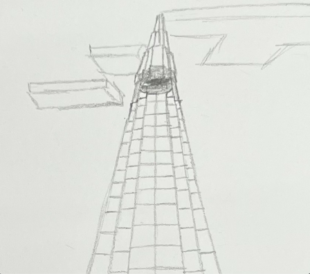
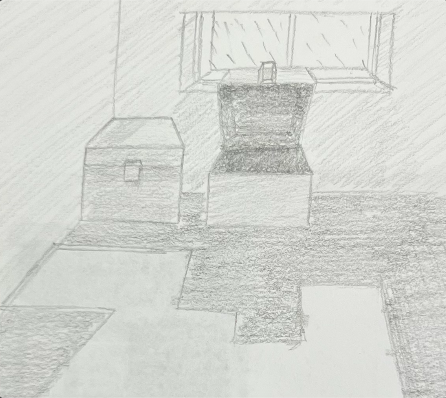
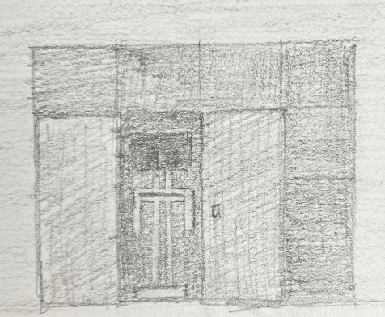

Group 4: Trades From Our Discussions With The Wandering Trader
In addition to our own adventures, our collection would be incomplete without the contributions of our dear friend,
the Wandering Villager. The “Trades From Our Discussions With The Wandering Trader” group involves snippets of
interesting items the trader showed us during our long talks. To ellaborate, these snippets, from the trader's vast options of items,
are those that Me was excited to see or Jeffrey thought was a beautiful addition to their library. Importantly,
they all told us much about the worlds they came from, often biomes far away for the entire team to travel.
Those snippets, are a Lily Pad, a pink Tulip, and pumpkin seeds. Although miniscule in the grand scheme of things,
they tell us about the swamps in the distance that Me cannot reach because of the water, the quiet fields where the flowers bloom and the mountains
other varieties whisper in, and the variety of foods other villages prouce different from our carrots, beets, and potatoes.
Exploring Remnants of Interactions With Steve
Trades From Our Discussions With The Wandering Trader

Large Tower Made By Steve, Reason Currently Unknown

A Lily Pad From a Nearby Swamp Biome

A Corner of Steve's Most Recent Past Residence, Empty Chests and A Peculiar 'Carpet'

A Tulip The Trader Thought Was Pretty

A Functional Element of Steve's Most Recent Past Residence, A 'Closet' With His 'Helmet'

A Block's Worth Of Pumpkin Seeds From Another Village
With Each Tale Comes Data
| Group | Biome | Distance From Home (According to Me) | "Wow" Factor | Number of Decorative Items | Discoverer (Team Member) |
| steve | mountainous plains | far | size/height | 0/NA | Me |
| steve | mountainous plains | far | carpet style | 1 | Me |
| steve | mountainous plains | far | armor stand | 1 | Me |
| trader | swamp | somewhat far (two biomes over) | never seen before by Me | 0/NA | Trader |
| trader | plains | close by (one biome over) | not common at home | 1 | Trader |
| trader | taiga | very far | new food type | 0/NA | Trader |